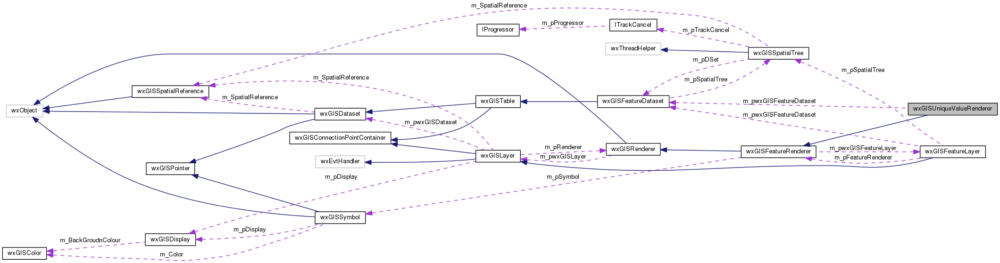

|
|
Version: 0.5.0 |


wxGISUniqueValueRenderer Class Reference
Inheritance diagram for wxGISUniqueValueRenderer:

Collaboration diagram for wxGISUniqueValueRenderer:

Public Member Functions | |
| wxGISUniqueValueRenderer (wxGISLayer *pwxGISLayer=NULL) | |
| virtual void | AddValue (int nField, const wxString &sValue, wxGISSymbol *const Symbol) |
| virtual void | SetSymbol (wxGISSymbol *pSymbol) |
| virtual void | Draw (const wxGISSpatialTreeCursor &Cursor, wxGISEnumDrawPhase DrawPhase, wxGISDisplay *pDisplay, ITrackCancel *pTrackCancel=NULL) |
 Public Member Functions inherited from wxGISFeatureRenderer Public Member Functions inherited from wxGISFeatureRenderer | |
| wxGISFeatureRenderer (wxGISLayer *pwxGISLayer=NULL) | |
| virtual bool | CanRender (wxGISLayer *const pwxGISLayer) const |
| virtual bool | Draw (wxGISEnumDrawPhase DrawPhase, wxGISDisplay *const pDisplay, ITrackCancel *const pTrackCancel=NULL) |
| Public Member Functions inherited from wxGISRenderer | |
| wxGISRenderer (wxGISLayer *pwxGISLayer=NULL) | |
| virtual wxString | GetName (void) const |
| virtual wxGISEnumRendererType | GetType (void) const |
Protected Attributes | |
| wxArrayInt | m_naCheckFields |
| wxGISUniqueValuesSymbolMap | m_omSymbols |
| Protected Attributes inherited from wxGISFeatureRenderer | |
| wxGISFeatureLayer * | m_pwxGISFeatureLayer |
| wxGISSymbol * | m_pSymbol |
| wxCriticalSection | m_CritSect |
| Protected Attributes inherited from wxGISRenderer | |
| wxGISLayer *const | m_pwxGISLayer |
The documentation for this class was generated from the following files:
- D:/work/projects/wxGIS/include/wxgis/carto/featurerenderer.h
- D:/work/projects/wxGIS/src/carto/featurerenderer.cpp
- Generated on Mon Oct 28 2013 04:48:02 for wxGIS by
 1.8.5
1.8.5